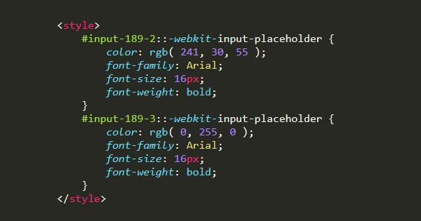

|
Las propiedades abreviadas son propiedades CSS que permiten asignar el valor de muchas otras propiedades de CSS al mismo tiempo. Usando una propiedad abreviada ('shorthand'), se pueden escribir hojas de estilo más concisas (y a menudo más legibles), ahorrando tiempo y energía; La especificación de CSS define las propiedades abreviadas para agrupar la definición de propiedades en común para el mismo tema. Ejemplo: La propiedad background de CSS es una propiedad abreviada que puede definir el valor de background-color, background-image, background-repeat, y background-position; A continuación las principales propiedades:
• Width: Define el ancho de un elemento, el valor se puede escribir en pixels, ems o porcen • Height: Define el alto de un elemento, el valor se puede escribir en pixels, ems o porcentaje. • Max-height o min-height: Definen el alto máximo o mínimo de un elemento. Muy importante en sitios adaptables • Padding: Es la distancia desde el borde de un elemento hasta su contenido. • Margin: Es la distancia entre un elemento y otro (desde el borde de un elemento hacia afuera) • Border: Define el borde de un elemento, su color, su estilo y grosor. • Background: Define los fondos de un objeto. El fondo puede ser una imagen o un color. El color puede ser pleno o degradado. |
 |